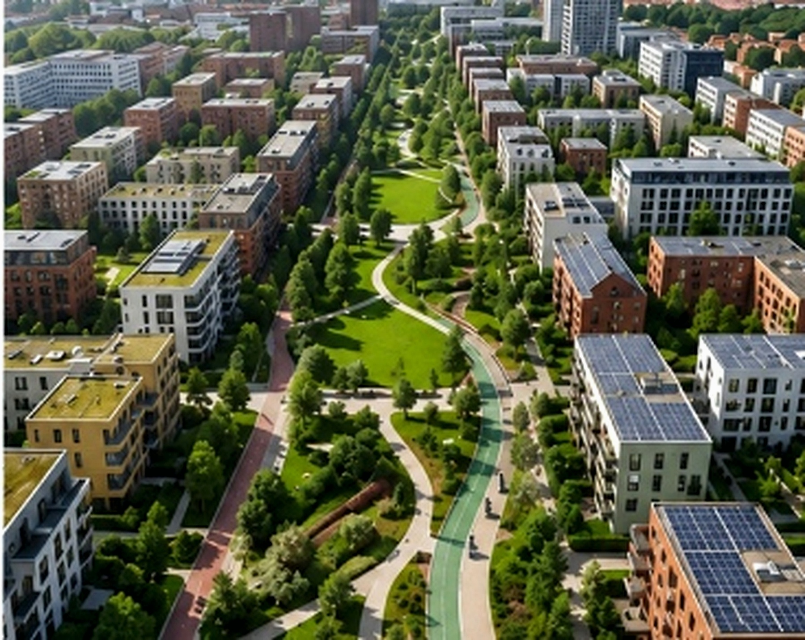
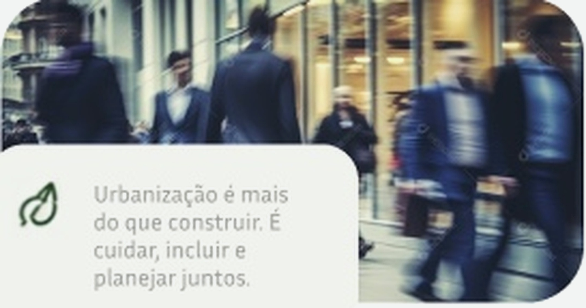
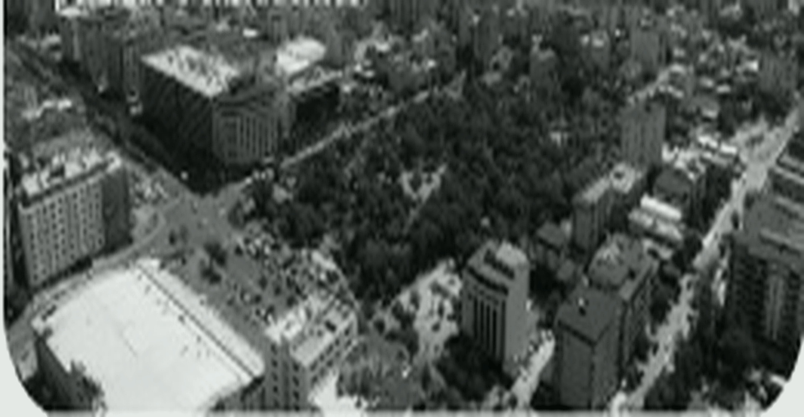
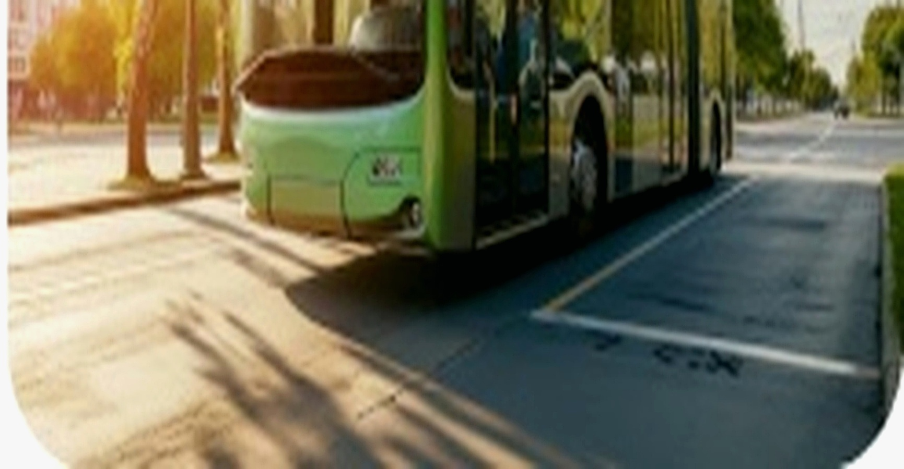

Participe
ParticipePessoas no centro
Urbanização para melhorar a vida de todos, não apenas para construir infraestrutura

Urbanização para melhorar a vida de todos, não apenas para construir infraestrutura
Harmonizar o crescimento com a preservação ambiental e eficiência de recursos.
Garantir que todas as vozes sejam ouvidas e que as soluções sejam justas.
Nossas cidades enfrentam desafios complexos que vão além do crescimento econômico. Precisamos olhar para a realidade urbana de forma integrada, considerando pessoas, ambiente e qualidade de vida. Urbanização é mais do que construir. É cuidar, incluir e planejar juntos.

Urbanização é mais
do que construir. É
cuidar, incluir e
planejar juntos.
Expansão urbana sem planejamento gera ocupações irregulares e infraestrutura sobrecarregada.
Trânsito, transporte público insuficiente e longos deslocamentos impactam a qualidade de vida.
Poluição, falta de áreas verdes e gestão inadequada de recursos naturais afetam nossa saúde e o planeta.
Acesso desigual a serviços e oportunidades amplia distâncias sociais dentro das cidades.
da população mundial
já vive em cidades
de pessoas viverão em
áreas urbanas até
2050
essenciais para uma
urbanização
sustentável
nosso objetivo é criar
cidades melhores

Cidades desorganizadas,
poluídas e excludentes.

Cidades sustentáveis,
planejadas e acolhedoras.